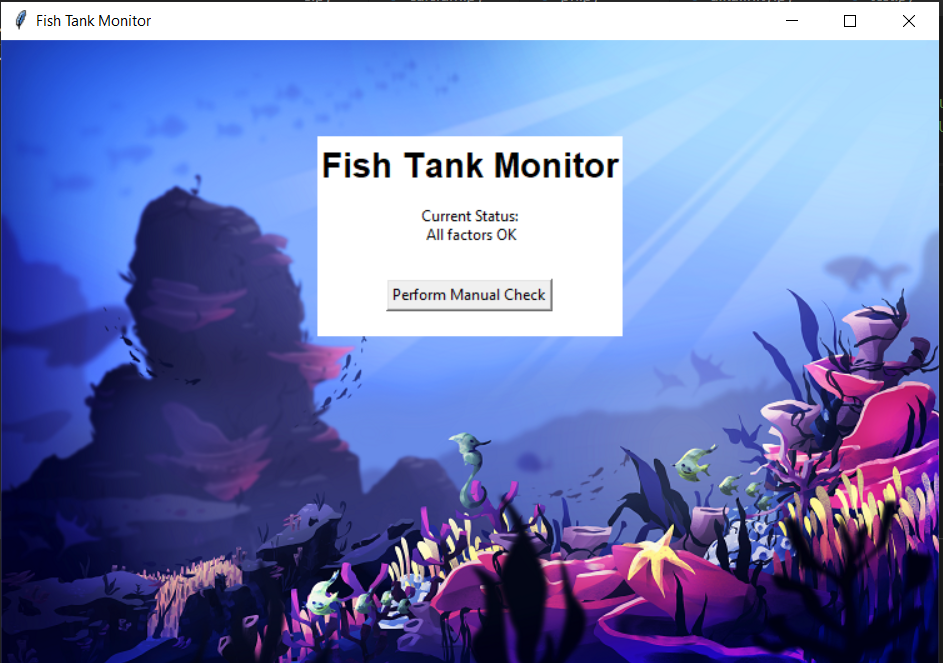
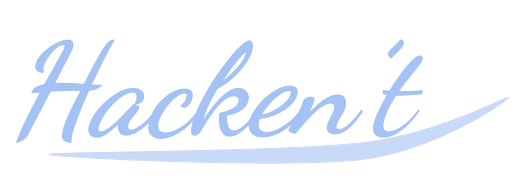
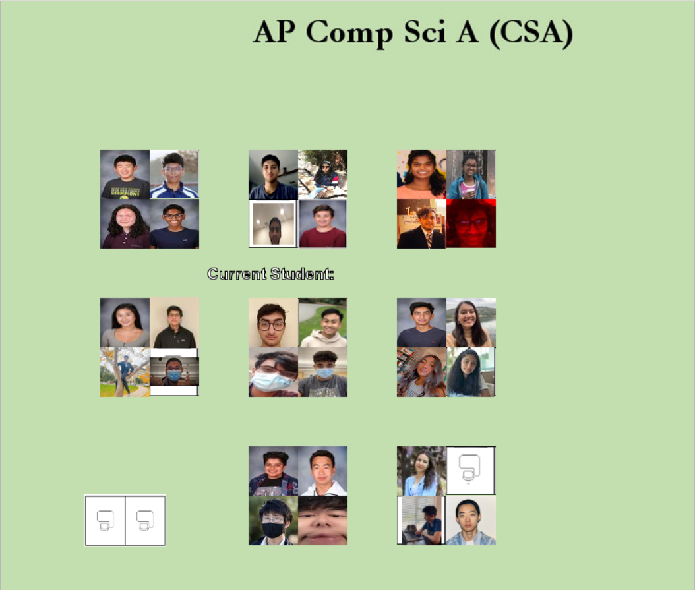
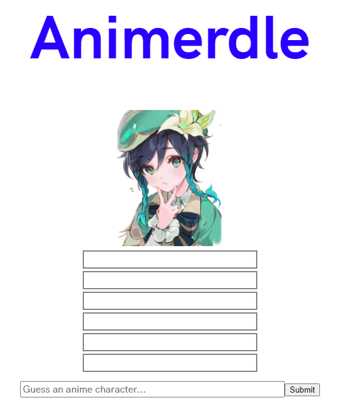

Date: Feb 2021 - Apr 2021
Course: AP Computer Science Principles
Objective: Develop a program to convert different units of measurement to each other
This was a project that I completed as part of the AP Computer Science Principles Create Task,
as part of the wider AP Computer Science Principles Digital Portfolio,
which itself is part of the larger AP Computer Science Principles AP test.
For the AP Create Task, I created a
program
to convert different measurements of length and volume to each other
(for example, converting miles to centimeters). As part of the AP Create Task, I wrote a
writeup on the
program’s function,
as well as how the program incorporated sequencing, selection, and iteration, how the program executed two
separate code blocks,
and how the program used lists to manage complexity, thus demonstrating and growing my skill in technical and
academic writing.
Also part of the AP Create Task was the creation of a
video
to demonstrate the program running, and its inputs and outputs.
Furthermore, within my program code, I was able to develop my use of iteration and algorithms further,
by using an algorithm to iterate through a dictionary of conversion factors and using that to derive a
conversion factor
for each unit of measurement, and was able to learn to use new methods such as .quit() that I had not used
previously.
The primary challenge I was able to overcome throughout the project was learning to tailor my code to a rubric
or instructions.
I incorporated lessons learned from a previous project that was also graded with the AP CSP Create Task rubric,
which I did not do that well on due to not completely following the rubric and instructions.
By the time I tackled my actual create task, I knew to tailor my code and project to the requirements of the
rubric.
Thus, when I realized that my initial code was too short to meet most of the rubric requirements,
despite more or less completing the objective, I was able to expand on the code and thus fulfill the
requirements on the rubric,
netting myself a 5 on Mr. Brown’s evaluation, rather than the 4 that I had earned with Mr. Brown’s evaluation
on the previous project.


Date: Feb 2021 - Mar 2021
Course: AP Computer Science Principles
Objective: Determine the problems with the fish tank monitoring software
and submit a report to the client on what went wrong
In this project, I worked with my partner, Joshua Aguilar, to determine what was wrong with the fish tank
monitoring software.
The client stated that the fish within the fish tank being monitored started dying unexpectedly,
despite the monitoring software stating that everything was ok.
Thus, the client tasked me and my partner, who were employed at the fictitious cybersecurity company Hacken’t,
with determining what had happened.
Ultimately, me and my partner determined that
our client had been phished through an email link, which led to an unauthorized user gaining access
to our client’s system. This unauthorized user used their access to mess up the fish tank monitoring system,
as well as grant themselves various admin privileges and possibly install a keylogger on our client’s system.
During the project, me and Joshua both worked on forensics. However, Joshua worked more on the logs,
while I worked more on the fish tank monitoring software itself.
To summarize our findings, we created a
document of all our evidence to support our findings, as well as a brief list of security recommendations
for our client.
In addition, we also created a
full documentation document, for internal purposes at Hacken’t.
Throughout this project, we demonstrated our ability to write professionally, whether that was through
documenting evidence
or through creating a list of security recommendations. We also made some design modifications to the fish tank
software
to improve it. Finally, throughout the project I was able to improve my skills of forensics,
which is something that I have not actively pursued since middle school, and of documentation,
which is something that I lacked a little in throughout the course of the first two projects in AP CSP.

Date: Sep 2021
Course: AP Computer Science A
Objective: Develop a seating chart for AP CSA collaboratively with the class
In this project, I worked with the rest of the class in CSA to develop a seating chart. We used Github
to individually submit our own actors in the Java project. Our actors had an image of ourselves, as well as
actions and sounds that they performed upon being clicked. For me, I had my actor go around the screen
randomly when clicked.
The main thing I learned and overcame in this project was github. Prior to this project, I had basically no
idea how to use github. For example, to make my online portfolio, I ended up having to add all my files
through the github GUI. Here, however, I was able to learn how to use git bash in order to effectively
collaborate with others.
In particular, I learned how to commit and make pull requests.

Date: May 14, 2022 - May 19, 2022
Course: AP Computer Science A
Objective: Create a Wordle derivative with anime girls
This was my project for the 2022 DHS Entrepreneurship Project. To make Animerdle,
I made a Wordle derivative with anime girls in Python and in React.
I began by making a Python demo of Animerdle as a proof of concept.
I was able to fairly quickly create a
Python demo that showed progressively less cropped images of anime characters,
allowing the user to guess after showing each image.
After creating the Python demo, I began to work on the final version of Animerdle:
a dynamic website, made in React.
Since I did not know React or Javascript before starting the project, I set out to quickly learn React.
To do this, I used a template from Glitch to get an understanding of React, as well as lots of tutorials
and looking at other people's code to understand how to do things in React. Ultimately, I was able to create a
website
that more or less implemented everything necessary for Animerdle. However, I was unable to get the image to
start cropped
and get less cropped with each incorrect guess.
In this project, the primary skill I learned was React and Javascript. By the end of the project, I was able to
create
a working website using React. This marked significant progress from my skills at the beginning of the project,
where
I did not understand Javascript at all. Furthermore, during this project, I also overcame the deadline of
working on a
significantly shortened deadline. Due to certain technical difficulties, I left the group I was working on the
Entreneurship
Project with for the majority of the project time on May 14th, leaving me a mere 4 days to code and document an
entire project
before the deadline of May 18th. Despite this very short deadline, I was able to focus myself on working on the
project and
successfully completed Animerdle on time. This was also accomplished in part by scrapping more complex features
from the website
such as autocompleting and selecting the anime character to guess, as well as cropping the images. I determined
that implementing
these features would not be feasible due to my limited knowledge of React and my limited timeframe, and so I
simply chose not to implement them.